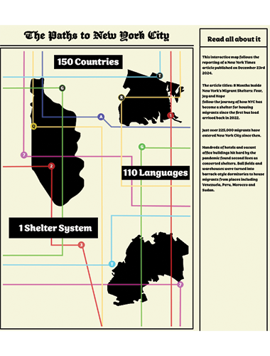

WEB DESIGN
Introduction to the Web
Spring Semester 2025 with Professor Paul Thayer

This project was assigned to us for our Midterm. The instructions were: to create a non-linear narrative made up of at least 10 HTML pages. Each page should contain multiple links to other pages (to maintain non-linearity). Each page should contain some form of media as well as text. There should be no more than 1 paragraph of text on each page.
Keeping these instructions in mind, I though of telling a real story which I read out-of-order from single newspapers. While at my job we use newpaper to wrap fragile bric a brac before handing it to customers. I read this newspaper, from the New York Times in a non-linear way and therfore decided to create a web-page where you could do the same.
The creative process was very enjoyable! I came up with the idea of telling the story in a map layout as if you are taking the subway to people's different stories. Since the article took place in NYC I thought this was a good use to layout the subway system which connects everyone who uses it together and also takes you to different locations where you find different cultures and immigrants who all make up the city. I had lots of fun with making a custom layout and whith add little realistic animations like the glow effect when you hover over the letters just like how they light-up in the subway.
Our last project of the semester was pretty open-ended. The instructions were: the website should consist of at least 6 individual HTML pages (or the equivalent). Your project must include text, media (images, video and or audio), the use of CSS animations and some use of JavaScript/jQuery. All media used must be created by you.
I knew I really wanted to make a website for my photography account. The website I had for my domain prior to taking this class was designed by me but not coded I used a pre-exsisting website builder on squarespace. I wanted to challenge myself to create a website where all of my creative ideas could come to life with no limits that exist when you use a pre-built website. After learning about animation and a little bit of Jquery I was able to understand how to take something I made on illustrator and turn it into a fun little animation start page which is what I am most pround of and would want to include in my other domain website if I could simply find away to add that code into my site I would.
Creativity wise, I worked a lot on illustrator and worked more on the animations then I did on html or css. It was a very different way to code a website than what I had done prior in class. I knew I really wanted to incorporate the same identity I had given to my other website with the logo and colors but I wanted to incorporte more of the film roll aspect and thought of the idea of creating an image gallery with that effect a roll would have. Luckily I was able to find many tutorials on youtube that helped me create my idea and even learned that all the projects you make on Adobe Illustraor already can be turned into code that you can later animate on css or javascript by telling that code of illustrations how to move. This is how I was able to make my starting page slide in with the logo.